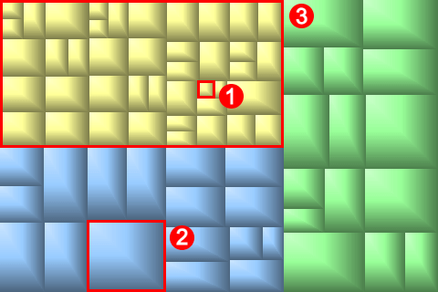

GrandPerspective visualises disk usage using so-called tree maps. A view window shows the contents of a given folder. Each rectangle in the view window represents a file or group of files. The area of the rectangle is proportional to its size. Files in the same folder appear together, but their placement is otherwise arbitrary. You can focus on an item by hovering the mouse pointer over it. Its name and size are then shown at the bottom of the view window.
A view where each file is colored by Folder. Indicated are: 1) a small file, 2) a large file, and 3) a folder.
